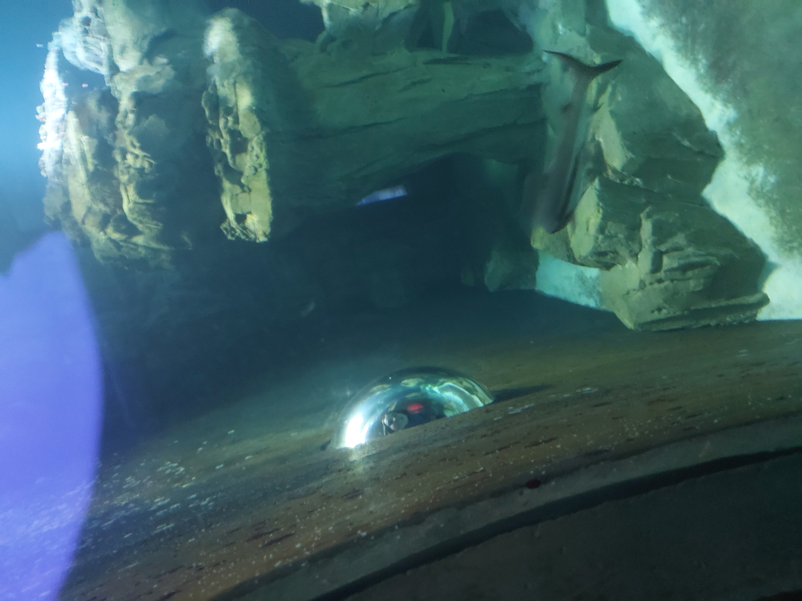
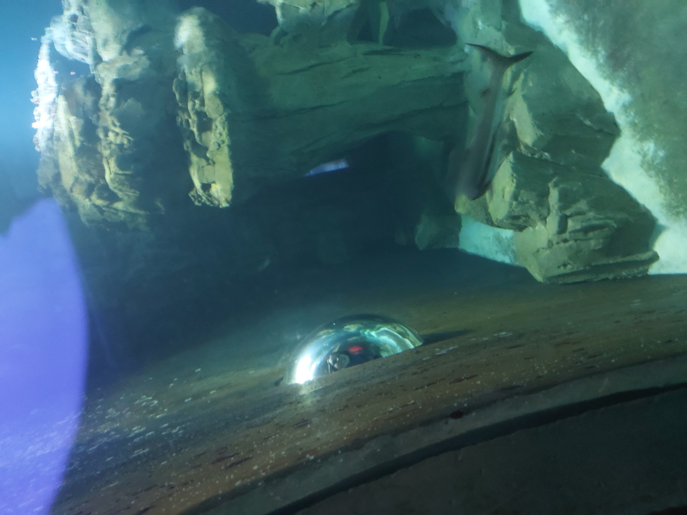

Eerste dag
Op 7/2/2023 vertrokken we rond 7 uur uit Gent met de trein naar Brussel. Eenmaal in Brussel aangekomen, moest Kato eerst naar het toilet voordat we het perron van de Thalys konden vinden. Nadat we het perron hadden gevonden, stapten we op de Thalys en begon de reis richting Parijs. Eenmaal in Parijs aangekomen, kreeg Kato de lastige taak om Pepijn naar het hotel te leiden. Dit verliep moeilijker dan gedacht vanwege werkzaamheden bij de halte waar we moesten overstappen. Pepijn begon daardoor volgens Kato moeilijk te doen, maar dit kwam ook doordat hij te laag stond. Uiteindelijk kwamen we aan bij het hotel.
Nadat we succesvol hadden ingecheckt en de koffers op de kamer stonden, gingen we de stad verkennen. We bezochten het legermuseum en maakten mooie foto's. Hierna hebben we de fietsen getest om te kijken hoe we ze de volgende dag konden gebruiken.
's Avonds gingen we in de buurt van het hotel eten. Het eten was lekker en toen het op was, keerden we terug naar het hotel omdat Kato moe was en wilde slapen.
Tweede dag
Op de tweede dag gingen we met de fiets naar ons ontbijt en vervolgens naar het museum. Dit was het museum over de riolen van Parijs. Het was een interessant museum, maar op sommige plekken stonk het wel een beetje.
Tijdens de middag bezochten we de Eiffeltoren en werden we op de brug gefotografeerd. Daarna gingen we naar de Notre-Dame en bewonderden we deze met een pannenkoek in de hand. Daar zagen we hetzelfde bedrijf dat eerder de foto had gemaakt op de brug bij de Eiffeltoren. We probeerden opnieuw gefotografeerd te worden, wat na lang wachten uiteindelijk lukte. Daarna gingen we naar de Sacré-Cœur. Dit was een lange fietstocht waarbij Pepijn zijn fiets aan Kato gaf omdat die beter werkte. Eenmaal aangekomen genoten we van het prachtige uitzicht op de basiliek.
's Avonds aten we iets en keerden we terug naar het hotel. Het was een lange dag met veel stappen en kilometers.
Derde dag
Dit was onze laatste dag in Parijs. 's Ochtends gaven we onze koffers af bij de balie en gingen we nog wat rondlopen in Parijs. Pepijn had onderweg mooie schoenen gezien, maar deze waren niet in zijn maat. Kato kwam toen met het idee om op de site te kijken en deze zo te kopen. Dat lukte en zo had Pepijn dankzij Kato nieuwe mooie schoenen.
's Middags kon Kato haar grote droom voor een deel beleven. We gingen naar de Eiffeltoren en konden niet helemaal naar boven vanwege een probleem met de lift, wat Kato zeer jammer vond. Ondanks dit konden we wel genieten van het prachtige uitzicht over de stad.
's Avonds namen we de metro naar Gare du Nord om terug naar huis te keren. We waren allebei moe en hadden een extra rugzakje met mooie herinneringen bij ons.
 
